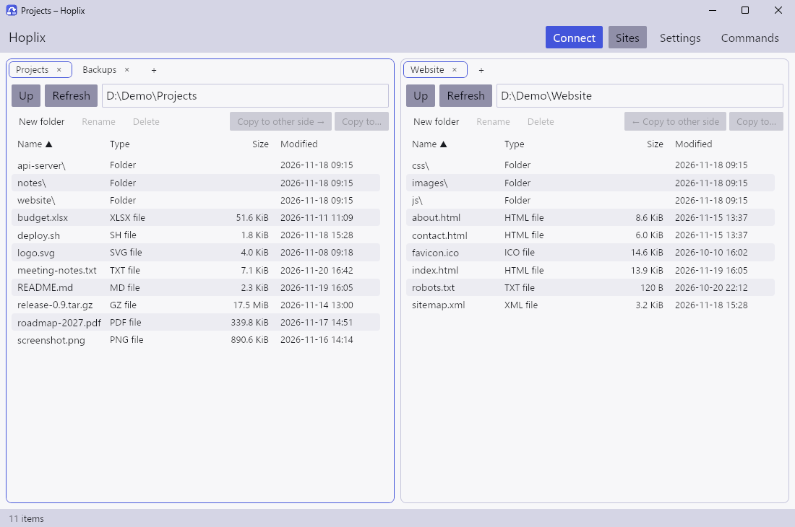

Hoplix
Hoplix ist ein Client zur Dateiübertragung für Windows und Linux, geschrieben in Rust mit iced. Er verbindet sich mit SFTP-, FTP- und FTPS-Servern, überträgt Dateien und ganze Ordner, vergleicht und synchronisiert Ordner und öffnet Dateien in externen Programmen. Das Kommandozeilenwerkzeug hoplix-cli nutzt denselben Kern.
Work in progress: Hoplix steht noch am Anfang der Entwicklung. Funktionen, Einstellungsdateien und Oberfläche können sich noch ändern.
Rückmeldungen und Fehlerberichte gern als Issue. Keine Verbindung zu Microsoft, dem GNOME-Projekt oder KDE und nicht von ihnen unterstützt. Windows ist eine Marke der Microsoft-Unternehmensgruppe.


Installation
Eine der Dateien unter Releases herunterladen:
- Installer
Hoplix-<Version>-windows-x64-setup.exe– installiert Hoplix undhoplix-clifür den aktuellen Benutzer (Standard, ohne Administratorrechte, nach%LOCALAPPDATA%\Programs\Hoplix) oder für alle Benutzer (nachC:\Program Files\Hoplix, fragt nach Administratorrechten) und legt einen Startmenü-Eintrag und auf Wunsch eine Desktop-Verknüpfung an. Entfernen lässt es sich unter Einstellungen → Apps. - Portabel für Windows
Hoplix-<Version>-windows-x64-portable.zip– in einen beliebigen Ordner entpacken undhoplix.exestarten. Den Ordnerlangneben dem Programm lassen. - Portabel für Linux
Hoplix-<Version>-linux-x64.tar.gz– entpacken undhoplixstarten. Den Ordnerlangneben dem Programm lassen.
Versionen 0.x erscheinen als Vorabversionen. Die Programme sind nicht signiert, daher kann SmartScreen beim ersten Start warnen: „Weitere Informationen“ → „Trotzdem ausführen“. Zu jeder Datei gibt es eine .sha256-Datei zum Prüfen des Downloads, und die Release-Notizen verlinken einen VirusTotal-Scan. Änderungen stehen im Changelog.
Installer-Parameter
Der Installer kennt die üblichen Inno-Setup-Parameter, z. B. für eine stille Installation:
| Parameter | Wirkung |
|---|---|
/CURRENTUSER | Nur für den aktuellen Benutzer installieren (Standard) |
/ALLUSERS | Für alle Benutzer installieren (fragt nach Administratorrechten) |
/DIR="C:\Pfad" | Installationsordner |
/SILENT, /VERYSILENT | Ohne Assistent (mit oder ohne Fortschrittsfenster) |
/SUPPRESSMSGBOXES | Keine Meldungsfenster im stillen Modus |
/TASKS="desktopicon" | Desktop-Verknüpfung anlegen; ohne den Parameter gibt es keine |
/NOICONS | Kein Startmenü-Eintrag |
/LOG="C:\Pfad\setup.log" | Protokolldatei schreiben |
Beispiel: Hoplix-0.2.0-windows-x64-setup.exe /VERYSILENT /SUPPRESSMSGBOXES /ALLUSERS /TASKS="desktopicon"
Einstellungen wie Sprache, Ansicht oder Editor gelten pro Benutzer und werden nicht über den Installer gesetzt. Die Deinstallation entfernt Programm und Verknüpfungen, lässt aber deine Einstellungen, Server und vertrauenswürdigen Serverschlüssel in %APPDATA%\Hoplix und die in der Windows-Anmeldeinformationsverwaltung gespeicherten Passwörter stehen.
Bedienung
- Jeder Ort öffnet sich in einem eigenen Tab. Mit + öffnest du einen neuen Tab, mit × schließt du einen.
- Ein Doppelklick öffnet einen Ordner, Nach oben wechselt in den übergeordneten Ordner, oder du gibst einen Pfad ein und drückst die Eingabetaste.
- Ein Klick auf eine Spaltenüberschrift sortiert danach, ein zweiter Klick kehrt die Reihenfolge um. Die Spalten sind Name, Typ, Größe und das Datum der letzten Änderung in deiner Ortszeit.
- Verbinden öffnet eine Verbindung in einem neuen Tab. Protokolle: SFTP (Port 22), FTP (21, unverschlüsselt), FTPS mit explizitem TLS (21) und FTPS mit implizitem TLS (990). Bei SFTP meldest du dich mit Passwort oder privater Schlüsseldatei an (OpenSSH-Format, optional mit Passphrase), bei FTP und FTPS mit Passwort. Als Server speichern macht aus der eingegebenen Verbindung einen gespeicherten Server.
- Beim ersten Verbinden mit einem SFTP-Server zeigt Hoplix den Fingerabdruck seines Schlüssels. Wähle Einmal vertrauen oder Immer vertrauen; ein geänderter Schlüssel wird mit einer Warnung abgelehnt.
- FTPS-Zertifikate werden gegen die Zertifizierungsstellen geprüft, denen dein System vertraut. Ist ein Zertifikat nicht vertrauenswürdig (zum Beispiel selbst signiert), zeigt Hoplix seinen SHA-256-Fingerabdruck und fragt genauso nach; ein geändertes, nicht vertrauenswürdiges Zertifikat wird abgelehnt.
- Bei reinem FTP warnt die Verbindungsseite, dass Passwort und Dateien unverschlüsselt übertragen werden.
- Neuer Ordner, Umbenennen und Löschen funktionieren in lokalen und entfernten Tabs. Löschen fragt vorher nach und entfernt Ordner samt Inhalt.
- Mehrere Einträge wählst du mit Strg+Klick (einzeln dazu oder weg) und Umschalt+Klick (Bereich) aus.
- Dateien öffnen und bearbeiten: Ein Doppelklick oder die Eingabetaste öffnet eine Datei mit dem Standardprogramm des Systems, Bearbeiten (F4) mit dem Editor aus Einstellungen → Editor (leer: Standardprogramm). Der Editor kann ein Programm oder eine Befehlszeile mit Argumenten sein, zum Beispiel
code --wait %1oder"C:\Program Files\Notepad++\notepad++.exe" -multiInst %1:%1steht für die Datei, fehlt es, wird die Datei als letztes Argument angehängt; Pfade und Argumente mit Leerzeichen gehören in doppelte Anführungszeichen. Hoplix startet das Programm direkt, nicht über eine Shell, und übergibt den Dateinamen immer als eigenes Argument. Dateien vom Server werden dazu erst in einen privaten temporären Ordner heruntergeladen. Hoplix prüft die Kopie jede Sekunde; wurde sie gespeichert, bietet die Liste Bearbeitete Dateien unten Hochladen (ersetzt die Datei auf dem Server über die Übertragungswarteschlange) oder Ignorieren an, mit Einstellungen → Änderungen automatisch hochladen lädt Hoplix sie sofort hoch. Das Beobachten endet mit Nicht mehr beobachten oder wenn der Tab geschlossen wird; die Kopien werden beim Beenden gelöscht. - Übertragungen: Zieh die Auswahl auf einen anderen Tab oder den anderen Bereich und lass sie dort los, wähle über Kopieren nach … einen Ziel-Tab oder nutze in der klassischen Ansicht Zur anderen Seite kopieren. Dateien und ganze Ordner landen im Ordner, der im Ziel gerade offen ist, zwischen beliebigen Orten: lokal zum Server (Hochladen), vom Server nach lokal (Herunterladen) oder von Server zu Server. Mehrere Übertragungen laufen gleichzeitig (Einstellungen → Übertragungen → Gleichzeitige Übertragungen, 1 bis 8, Standard 2); Gleichzeitige Downloads und Gleichzeitige Uploads begrenzen jede Richtung für sich (Standard: wie gleichzeitige Übertragungen). Download-Limit und Upload-Limit (KiB/s oder MiB/s, leer oder 0 für unbegrenzt) gelten gemeinsam für alle laufenden Übertragungen dieser Richtung. Eine Kopie zwischen zwei Servern zählt als Download und als Upload: Sie belegt in beiden Richtungen einen Platz, und für sie gelten beide Tempolimits. Änderungen wirken sofort; wird eine Grenze für gleichzeitige Übertragungen gesenkt, laufen bereits laufende Übertragungen erst zu Ende.
- Der Bereich Übertragungen unten zeigt jede Übertragung mit Fortschritt, Geschwindigkeit und Restzeit; eingeklappt bleibt eine Zeile mit Zusammenfassung. Einzelne oder alle Übertragungen lassen sich pausieren, fortsetzen, abbrechen, wiederholen und entfernen. Pausierte, abgebrochene und fehlgeschlagene Übertragungen machen dort weiter, wo sie aufgehört haben. Reißt die Verbindung ab, versucht Hoplix es erneut und setzt die Datei fort, standardmäßig dreimal nach 1, 2 und 4 Sekunden (Einstellungen → Verbindungen → Wiederholungen, 0 bis 10, und Erste Wiederholung nach, 1 bis 60 Sekunden; jede weitere Wartezeit ist doppelt so lang).
- Existiert eine Datei schon, fragt Hoplix nach: überschreiben, fortsetzen (wenn die vorhandene Datei kleiner ist), beide behalten (
Name (1).ext) oder überspringen, auf Wunsch für alle weiteren Konflikte. Im Bereich lässt sich stattdessen eine feste Antwort einstellen. Nach einer Übertragung wird der Zielordner neu geladen. - Vergleichen (Strg+D) markiert die Unterschiede zwischen den beiden Bereichen, in der modernen Ansicht zwischen dem aktuellen Tab und dem unter Vergleichen mit… gewählten:
+nur hier,»hier neuer,«hier älter,≠gleiche Zeit, aber andere Größe,!auf einer Seite Datei, auf der anderen Ordner,•Ordner mit unterschiedlichem Inhalt (mit Unterordner einbeziehen). Zeiten bis 2 Sekunden Abstand gelten als gleich; Zeiten aus FTP-Listen, die nur Minuten oder Tage zeigen, werden in dieser Genauigkeit verglichen. Nur Unterschiede blendet gleiche Einträge aus; Strg+A und die Pfeiltasten erreichen dann nur die sichtbaren. Der Vergleich folgt dem aktiven Tab: Wechselst du zu einem anderen Tab, öffnest oder schließt du einen, wird der neu aktive Tab verglichen; der Wechsel zum anderen verglichenen Tab behält den Vergleich bei, und er endet, wenn kein zweiter Tab mehr übrig ist. - Synchronisieren… (Strg+Umschalt+D) kopiert zwischen den beiden verglichenen Ordnern: von links nach rechts, von rechts nach links oder in beide Richtungen (die neuere Datei gewinnt; Dateien, die sich nur in der Größe unterscheiden, werden übersprungen). Aktualisieren kopiert neue und neuere Dateien, Spiegeln ersetzt auch neuere Dateien im Ziel und kann Dateien löschen, die in der Quelle fehlen. Optionen: Unterordner einbeziehen, nur die Größe vergleichen, versteckte Dateien überspringen (Namen mit Punkt am Anfang), Ausschlussmuster mit
*und?(ohne Groß-/Kleinschreibung, getrennt durch;oder,; ein Muster mit/gilt für den Pfad im Ordner). Vor dem Start zeigt der Dialog, wie viele Dateien hoch- oder heruntergeladen bzw. kopiert, Ordner angelegt und Dateien gelöscht werden, die Gesamtgröße und eine Vorschauliste. Löschen braucht die zusätzliche Bestätigung Ja, löschen. Die Dateien laufen über die Übertragungswarteschlange und behalten ihre Änderungszeit, soweit der Server das erlaubt. - Server verwaltet deine Server, sortiert in Ordner, die sich verschachteln lassen. Server und Ordner lassen sich anlegen, bearbeiten, duplizieren und löschen; über das Feld Ordner verschiebst du einen Server. Gespeichert werden Protokoll, Server, Port, Benutzername, Anmeldeart, Schlüsseldatei, der zu öffnende Ordner auf dem Server und lokal sowie Notizen. Verbinden oder ein Doppelklick öffnet den Server in einem neuen Tab mit seinem Namen; ein lokaler Ordner öffnet sich daneben (in der klassischen Ansicht im anderen Bereich).
- Passwort speichern (bzw. Passphrase speichern bei Schlüsseldateien) merkt sich das Geheimnis eines Servers. Wo, legst du unter Einstellungen → Gespeicherte Passwörter fest: in der Windows-Anmeldeinformationsverwaltung bzw. im Schlüsselbund des Systems unter Linux (Standard) oder in einer mit einem Master-Passwort verschlüsselten Datei, die du einmal pro Sitzung entsperrst. Beim Wechsel ziehen alle gespeicherten Passwörter mit um; Master-Passwort ändern verschlüsselt sie neu.
- Die Einstellungen sind in Abschnitte gegliedert: Allgemein (hell, dunkel oder wie im System, die Sprache und die Ansicht: Modern mit einem Browser mit Tabs oder Klassisch mit zwei Bereichen nebeneinander), Übertragungen, Verbindungen, Passwörter, Bearbeiten und Updates. Bei einem kleinen Fenster lässt sich die Seite scrollen.
- Updates: Hoplix sucht einmal am Tag, ein paar Sekunden nach dem Start, im Hintergrund nach einer neuen Version (Einstellungen → Updates → Automatisch nach Updates suchen, standardmäßig an). Jetzt prüfen prüft sofort, auch wenn die automatische Prüfung aus ist; der Abschnitt zeigt die installierte Version, das Ergebnis und wann Hoplix zuletzt geprüft hat. Gibt es eine neuere Version, zeigt Hoplix sie einmal pro Version mit Release-Seite öffnen (öffnet die Release-Seite auf GitHub im Browser) und Später an; danach bleibt ein kleiner Link Update x.y.z verfügbar rechts in der Statusleiste, bis diese Version installiert ist. Hoplix lädt selbst nie etwas herunter und installiert nichts. Solange Hoplix eine 0.x-Version ist, werden auch Vorabversionen angeboten; ab Version 1.0 nur reguläre Versionen (außer du nutzt selbst eine Vorabversion).
- Befehle (Strg+K) öffnet die Befehlspalette: Tippe ein paar Buchstaben einer Aktion oder eines gespeicherten Servers, wähle mit den Pfeiltasten und drücke die Eingabetaste; Esc schließt sie.
- Hoplix merkt sich die offenen Tabs sowie Größe und Position des Fensters. Nach einem Neustart öffnen sich lokale Tabs wieder in ihrem Ordner; Tabs gespeicherter Server kommen nicht verbunden zurück und verbinden sich mit einem Klick, Hoplix verbindet sich also nie von selbst. Verbindungen ohne gespeicherten Server werden nicht wiederhergestellt.
- Bricht die Verbindung zu einem Server ab, verbindet sich Hoplix bei der nächsten Aktion mit derselben Anmeldung neu; der Serverschlüssel muss weiterhin passen. Für SFTP lässt sich das unter Einstellungen → Verbindungen → Abgebrochene SFTP-Sitzungen automatisch neu verbinden abschalten; eine abgebrochene Sitzung bleibt dann geschlossen, bis du dich neu verbindest.
Tastenkürzel
Die Kürzel wirken in der Dateiliste, nicht während du in ein Textfeld tippst.
| Tasten | Aktion |
|---|---|
| Strg+K | Befehlspalette |
| Eingabe | Ausgewählten Ordner oder ausgewählte Datei öffnen |
| F4 | Ausgewählte Datei im externen Editor bearbeiten |
| Rücktaste, Alt+↑ | Übergeordneter Ordner |
| F5 | Aktualisieren |
| F2 | Umbenennen |
| Entf | Löschen (mit Rückfrage) |
| ↑, ↓, Bild ↑, Bild ↓, Pos1, Ende | Auswahl bewegen; mit Umschalt erweitern |
| Strg+A | Alles auswählen |
| Strg+D | Ordner vergleichen bzw. Vergleich beenden |
| Strg+Umschalt+D | Ordner synchronisieren |
| Strg+T, Strg+W | Neuer Tab, Tab schließen |
| Strg+Tab, Strg+Umschalt+Tab | Nächster, vorheriger Tab |
| Esc | Dialog, Palette oder Seite schließen |
Kommandozeile
hoplix-cli bietet dieselben Vorgänge ohne Fenster:
hoplix-cli ls sftp://user@example.com/var/www --key ~/.ssh/id_ed25519
hoplix-cli get sftp://user@example.com/~/backup.tar.gz . --password-env HOPLIX_PASSWORD --resume
hoplix-cli put report.pdf sftp://user@example.com:2222/srv/files/ --key id_ed25519 --passphrase-env KEY_PASS
hoplix-cli ls ftpes://user@example.com/www --password-env HOPLIX_PASSWORD
hoplix-cli get ftp://ftp.example.com/pub/readme.txt .
hoplix-cli put -r website sftp://user@example.com/var/www --key id_ed25519 --skip-existing
hoplix-cli cp -r sftp://user@old.example.com/srv/data sftp://user@new.example.com/srv/ --key id_ed25519
hoplix-cli compare -r website sftp://user@example.com/var/www --key id_ed25519
hoplix-cli sync -r website sftp://user@example.com/var/www --key id_ed25519 --delete --exclude "*.tmp" --dry-runGespeicherte Server lassen sich ebenfalls als Ziel angeben, mit ihrem gespeicherten Passwort bzw. ihrer Passphrase:
hoplix-cli sites
hoplix-cli ls "site://Web server/var/www"
hoplix-cli get site://Work%2FBackup/~/backup.tar.gz . --master-password-env HOPLIX_MASTERBefehle: ls, stat, get [-r], put [-r], cp [-r], mkdir, rm [-r], mv, sites. -r kopiert Ordner samt Inhalt; cp kopiert zwischen zwei beliebigen Zielen, auch von einem Server zum anderen. Ist das Ziel ein vorhandener Ordner, landet die Quelle darin, sonst bekommt sie den Namen des Ziels. Vorhandene Dateien werden überschrieben, außer du gibst --resume (kleinere Dateien fertig übertragen, gleich große überspringen), --skip-existing oder --keep-both an. --retries <n> (0 bis 10, Standard 3) und --retry-delay <Sekunden> (1 bis 60, Standard 1; jede weitere Wartezeit ist doppelt so lang) legen die Wiederholungen nach einem Verbindungsabbruch fest. --limit-download <Rate> und --limit-upload <Rate> begrenzen das Tempo, zum Beispiel 500K oder 2M (eine Zahl ohne Einheit bedeutet KiB/s, 0 unbegrenzt); eine Kopie zwischen zwei Servern begrenzen beide. Diese vier Optionen gelten für get, put, cp und sync. Den Fortschritt zeigt das Werkzeug auf stderr, wenn das ein Terminal ist. sites listet Namen und Adresse jedes Servers auf, ohne Benutzernamen. Server werden über ihren Namen oder Ordner/Name angesprochen (/ als %2F schreiben); --password-env oder --key ersetzen das gespeicherte Geheimnis. Mit Master-Passwort gibst du dessen Umgebungsvariable mit --master-password-env an. URLs beginnen mit sftp://, ftp://, ftpes:// (FTPS, explizites TLS) oder ftps:// (FTPS, implizites TLS); FTP-URLs ohne Benutzer melden sich anonym an. Passwörter und Passphrasen liest das Werkzeug nur aus Umgebungsvariablen, deren Namen du angibst, nie von der Befehlszeile. Unbekannte Serverschlüssel und nicht vertrauenswürdige Zertifikate werden abgelehnt, außer du gibst --accept-host-key (nur dieser Aufruf) oder --remember-host-key an. hoplix-cli help zeigt alle Optionen.
compare <a> <b> [-r] gibt pro Unterschied eine Zeile aus (only-first, only-second, newer-first, newer-second, size, type) und eine Zusammenfassung. sync <von> <nach> [-r] kopiert neue und neuere Dateien aus <von>, sodass <nach> dazu passt, und legt <nach> an, wenn es fehlt; --mirror ersetzt auch Dateien, die in <nach> neuer sind, --delete löscht zusätzlich, was in <von> fehlt, --dry-run zeigt nur den Plan. Beide kennen --size-only, --skip-hidden und --exclude <Muster> (mehrfach).
Funktionsweise
crates/hoplix-corelegt eine gemeinsame Schnittstelle für Dateisysteme fest und enthält das lokale Dateisystem, SFTP und FTP/FTPS, alles in reinem Rust: SFTP mitrusshundrussh-sftp, FTP mitsuppaftp, TLS mitrustlsundrustls-platform-verifier(Zertifikatsspeicher des Systems), Kryptografie ausring.- FTP nutzt den passiven Modus (EPSV, oder PASV, wenn der Server EPSV nicht kennt), MLSD/MLST-Listen, wenn vorhanden, sonst LIST, UTF-8-Dateinamen und REST/APPE zum Fortsetzen. Übertragungen laufen über eigene Verbindungen, sodass du währenddessen weiter durchsuchen kannst.
- Die Übertragungswarteschlange in
hoplix-corereicht jede Datei in Blöcken von 128 KiB von der Quelle zum Ziel durch, Kopien zwischen zwei Servern berühren daher nie die lokale Festplatte. Ordner werden zuerst gelesen, um die Gesamtgröße zu kennen, und dann Datei für Datei kopiert; gleichzeitige Übertragungen laufen als eigene Aufträge. SFTP schickt gleichzeitige Übertragungen als getrennte Anfragen über die eine SSH-Sitzung, FTP öffnet dafür zusätzliche Verbindungen. Die Warteschlange startet wartende Aufträge der Reihe nach, solange die Gesamtgrenze und die Grenze der Richtung des Auftrags es zulassen; ein Auftrag, dessen Richtung voll ist, wird übersprungen, sodass zum Beispiel ein Upload starten kann, während Downloads warten. Die Richtung ergibt sich aus den beiden Seiten: lokal zum Server ist ein Upload, vom Server nach lokal ein Download, von Server zu Server beides, lokal zu lokal keins. Tempolimits nutzen pro Richtung einen Token-Bucket, den sich alle laufenden Aufträge teilen: Jeder Block nimmt seine Größe aus dem Bucket und wartet, bis der Bucket mit der eingestellten Rate wieder aufgefüllt ist (mit einem Vorrat von höchstens einer Viertelsekunde); mit Limit schrumpfen die Blöcke auf ein Achtel der Rate, damit auch niedrige Limits gleichmäßig bleiben. Wiederholungen warten die erste Wartezeit (Standard 1 Sekunde), mit jedem weiteren Versuch doppelt so lang, und machen bei der Größe weiter, die die Zieldatei schon hat. crates/hoplix-appenthält die Oberfläche mit iced,crates/hoplix-clidas Kommandozeilenwerkzeug.- Die Update-Prüfung (
updateinhoplix-core) nutzt einen kleinen HTTP/1.1-Client auftokio-rustlsmit dem Zertifikatsspeicher des Systems (rustls-platform-verifier) und einen kleinen JSON-Leser für die Versionsliste, ohne zusätzliche Crates. Sie wählt unter den Versionen, die keine Entwürfe sind, die höchste (SemVer, einschließlich Vorabversions-Zusätzen) und bietet sie nur an, wenn sie neuer als die installierte ist. - Vergleichen und Synchronisieren (
sync.rsinhoplix-core) liest beide Ordner, ordnet die Einträge über den Namen zu und vergleicht Größe und Änderungszeit. Eine Synchronisierung erstellt zuerst einen Plan (Löschen, neue Ordner, Kopien), den die App und--dry-runanzeigen; die Kopien laufen dann mit Überschreiben über die Übertragungswarteschlange, danach wird die Änderungszeit gesetzt (SFTPSETSTAT, FTPMFMToderMDTM, lokal direkt). Die Synchronisierung nutzt nur die bereits offenen Verbindungen. - Unter Windows bettet
build/resources.rsIcon, Versionsinfo und ein Manifest (DPI pro Monitor, UTF-8) ohne zusätzliche Werkzeuge in beide Programme ein; die Version steht nur in derCargo.tomldes Workspaces, ein Test prüft, dassCargo.lock,CHANGELOG.md, das Installer-Skript und der Release-Workflow dazu passen. Die Titelleiste übernimmt die Farben des aktuellen Designs. - Die Texte stammen aus
lang/<code>.lang(Schlüssel = Text, UTF-8) mit einem Kommentarkopf, der Sprache, Kategorie und Prüfende nennt; LANGUAGES.md listet sie auf. Englisch ist eingebaut; fehlende Texte fallen einzeln auf die mitlanguage.fallbackgenannte Sprache zurück, sonst auf Englisch.language.direction = rtlkennzeichnet eine Sprache mit Schreibrichtung von rechts nach links; das wird gelesen, die Oberfläche aber noch nicht gespiegelt. - Server stehen ohne Passwörter in
sites.conf. Gespeicherte Passwörter landen in der Windows-Anmeldeinformationsverwaltung (EinträgeHoplix:site/<id>) bzw. unter Linux im Secret Service (GNOME Keyring, KWallet; Attributeapplication=Hoplix,name=site/<id>). Mit Master-Passwort liegen sie stattdessen insecrets.vault: Der Schlüssel wird mit PBKDF2-HMAC-SHA256 abgeleitet (600.000 Durchläufe, zufälliges 32-Byte-Salt), jeder Eintrag ist mit AES-256-GCM verschlüsselt (zufällige Nonce, an seinen Namen gebunden), alles mitring. Ein vergessenes Master-Passwort lässt sich nicht wiederherstellen. - Die Einstellungen liegen unter Windows in
%APPDATA%\Hoplix\settings.conf, unter Linux in$XDG_CONFIG_HOME/hoplix/settings.conf(standardmäßig~/.config/hoplix/). Offene Tabs (Ordnerpfade und Server-IDs) sowie Größe und Position des Fensters stehen daneben insession.conf. Vertrauenswürdige Serverschlüssel stehen im selben Ordner inknown_hostsim OpenSSH-Format, vertrauenswürdige FTPS-Zertifikate intrusted_certificates(eine Zeile pro Server:host:port SHA256:…).
Datenschutz
Hoplix verbindet sich mit den Servern, die du selbst eingibst, und für die Update-Prüfung mit GitHub; es gibt keine Telemetrie.
Update-Prüfung (nur die App, nicht
hoplix-cli): Hoplix sendet eine HTTPS-GET-Anfrage anapi.github.comfür/repos/TripleT3005/Hoplix/releases?per_page=10, die Liste der neuesten Hoplix-Versionen. Antwortet GitHub mit einer Weiterleitung, folgt Hoplix ihr höchstens dreimal und nur zugithub.comoder dessen Subdomains. Das geschieht einmal am Tag ein paar Sekunden nach dem Start, solange Automatisch nach Updates suchen an ist, und immer, wenn du auf Jetzt prüfen klickst; mit ausgeschalteter automatischer Prüfung kontaktiert Hoplix GitHub nur bei Jetzt prüfen. Die Anfrage enthält nur die HeaderHost,User-Agent: Hoplix/<Version>(die installierte Version) undConnection: close: keine Cookies, keine Kennung, keine Angaben zu deinem System, deinen Einstellungen oder deinen Servern. Wie bei jeder Verbindung sieht GitHub deine IP-Adresse. Hoplix empfängt die Versionsliste (Version, Adresse der Release-Seite, Kennzeichen für Entwurf und Vorabversion; alles andere wird ignoriert), liest höchstens 1 MiB und bricht nach 15 Sekunden ab. Insettings.confspeichert Hoplix den Zeitpunkt der letzten Prüfung, die neueste bekannte Version mit ihrer Release-Seite und die Version, auf die es zuletzt hingewiesen hat. Release-Seite öffnen und der Link in der Statusleiste öffnen die Release-Seite aufgithub.comin deinem Standardbrowser; Hoplix selbst lädt nichts herunter.SFTP: Hoplix baut eine SSH-Verbindung zum eingegebenen Server und Port auf. Gesendet werden dein Benutzername und entweder dein Passwort oder eine mit deinem privaten Schlüssel erzeugte Signatur; der Schlüssel selbst verlässt deinen Rechner nie. Alles Weitere (Ordnerlisten, herunter- oder hochgeladene Dateien, Umbenennen, Löschen) läuft nur über diese verschlüsselte Verbindung.
FTPS: wie FTP unten, aber die Steuerverbindung und alle Datenverbindungen sind mit TLS verschlüsselt. Zur Prüfung des Zertifikats kann das System Sperrinformationen abrufen, wie bei anderen Programmen auch.
FTP: Benutzername, Passwort, Ordnerlisten und Dateiinhalte werden unverschlüsselt übertragen und können unterwegs mitgelesen werden. Bei anonymer Anmeldung (
ftp://ohne Benutzer inhoplix-cli) wirdanonymous@als Passwort gesendet.Gespeichert werden die Einstellungsdatei,
session.confmit den Ordnern deiner offenen Tabs und der Fensterposition, die Dateiknown_hostsmit den Schlüsseln der Server, denen du immer vertraust, die Dateitrusted_certificatesmit den Zertifikats-Fingerabdrücken, denen du immer vertraust, undsites.confmit deinen Servern (ohne Passwörter). Passwörter und Passphrasen werden nur gespeichert, wenn du Passwort speichern ankreuzt, und nur in der Windows-Anmeldeinformationsverwaltung, im Schlüsselbund des Systems unter Linux oder in der verschlüsseltensecrets.vault, nie im Klartext. Nichts davon wird irgendwohin gesendet.Lokal liest Hoplix nur die Ordner, die du öffnest. Dateien vom Server, die du öffnest oder bearbeitest, werden in einen Ordner
hoplix-edit-…im temporären Ordner deines Benutzerkontos kopiert und beim Beenden gelöscht; nach einem Absturz zurückgebliebene Ordner löscht Hoplix beim nächsten Start, sobald der Prozess, der sie angelegt hat, nicht mehr läuft; beim Öffnen startet Hoplix nur das Standardprogramm oder den eingestellten Editor.
Lizenz
MIT © TripleT3005
Die Lizenzen der verwendeten Bibliotheken stehen in THIRD-PARTY-LICENSES.txt, die dem Programm beiliegt.